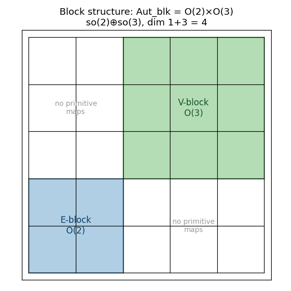
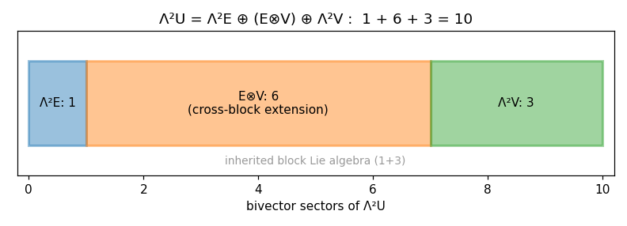
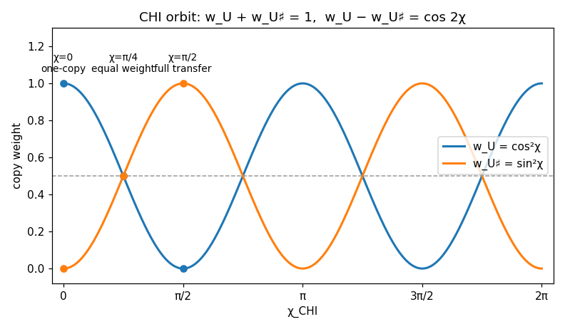
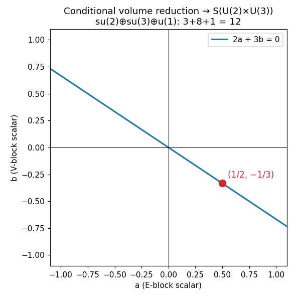
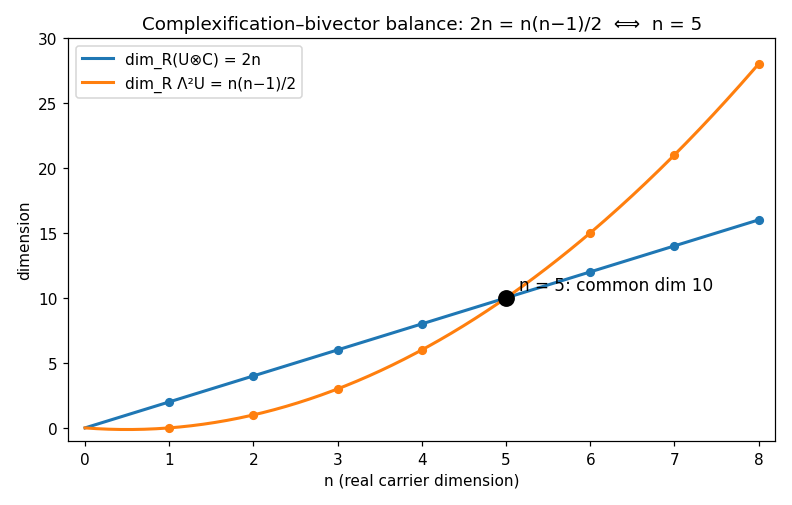
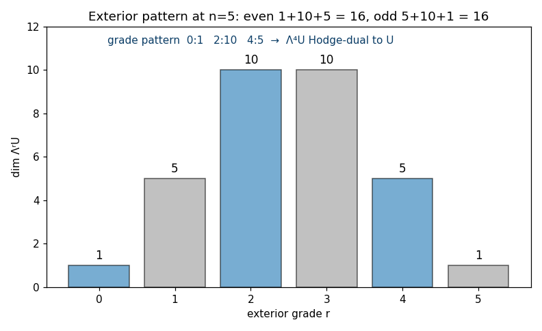
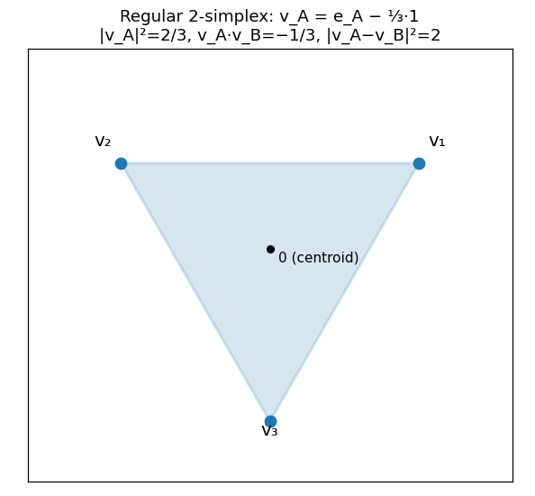

A restructured rewrite of Book 6 of R Theory — Volume I, plus the Volume I closure. Pictures and intuition first; the formal audit second. Every claim carries exactly one status: CP checked proof, SC completed symbolic check, NC completed numerical check, ST standard imported theorem, MA manuscript assertion, AX assumption or axiom, IN incomplete or failed computation, IC incorrect result. A sampled numerical agreement (worst measured sampled error 9.1e-11 across the book's 148 numerical checks) is a completed numerical check, never a proof.
Contents. I. See it first · II. Then earn it · III. Certification · IV. Close the book · V. Volume I closure
Seven pictures. Each one is an exact identity or theorem of Book 6 drawn before it is proved or checked. The graphs below are live Desmos calculators (drag to pan, scroll to zoom); if Desmos cannot load, a static rendering appears instead, generated from the same formulas.







The formal audit, section by section, condensed. Notation: U = E⊕V with dimℝE = 2, dimℝV = 3, dimℝU = 5; W = U⊕U♯, dimℝW = 10; ι: U → U♯ the Axiom-Zero pairing; Π: U → U♯ an isometric identification (§6.3A datum).
M0–M4 stay frozen; M3 supplies the real oriented Euclidean rank-2 carrier E, M4 the independent Euclidean rank-3 carrier V, Book 5 the split U = E⊕V and the doubled W = U⊕U♯ under primitive diagonal noncoupling. Two distinct non-mixings must not be conflated: the absence of primitive E↔V maps is inherited from the independent M3/M4 seam MA, while Axiom Zero separately forbids primitive U↔U♯ mixing AX. Book 6 statements are classified (A) direct consequences of adopted M5 structure, (B) maximal mathematical automorphism envelopes of earned structures, (C) conditional extensions needing an explicitly declared additional datum, (D) obstruction/nonselection theorems — a declared grammar, not a derived one MA. "Local" means pointwise or frame symmetry only; it does not yet mean gauge symmetry localized over spacetime MA.
For the Euclidean split U = E⊕V, the inherited block-preserving isometry group is Autblk(U,g;E,V) = O(E)×O(V) ≅ O(2)×O(3), with identity-component Lie algebra so(2)⊕so(3) of dimension 1+3 = 4 CP (dim O(n) = n(n−1)/2 is standard ST). No larger mixing group is primitive at this stage — a boundary declaration, not a computation MA.
Λ²U = Λ²E ⊕ (E⊗V) ⊕ Λ²V with dimensions 1+6+3 = 10 CP. The outer pieces reproduce the inherited block Lie algebra; the six-dimensional E⊗V term is the cross-block extension sector. With the full block algebra present, adjoining one nonzero simple cross generator closes under Lie brackets to so(5), taking the closure dimension from 4 to 10 NC (iterated-commutator rank check). This is an extension theorem, not inherited structure: SO(5)-type mixing becomes available once a cross-block datum is added, and Book 6 does not promote that datum to a primitive axiom MA.
With the Axiom-Zero pairing ι, the paired-copy complex structure Iι(u,v) = (−ι−1v, ιu) satisfies Iι² = −1; every primitive paired lift A⊕ιAι−1 commutes with Iι; the M5 primitive representation is complex-linear relative to the declared pairing, and W has complex rank five CP. This external Iι is not the internal M3 operator J — conflating the two would erase the independence Axiom Zero introduced — and the ι-dependent construction is not canonical from an unpaired abstract isomorphism class alone MA.
Introduce, as additional datum rather than axiom, an isometric identification Π: U → U♯ AX. The CHI generator JCHI(u,v) = (−Π−1v, Πu) satisfies JCHI² = −1 and is conjugate to Iι relative to Π — no second primitive complex structure, no new ambient dimension CP. For dimensionless χCHI: exp(χCHIJCHI) = cos(χCHI)·1 + sin(χCHI)·JCHI CP NC; the orbit of (u,0) is cos(χCHI)u ⊕ sin(χCHI)Πu with ‖Ψ‖² = ‖u‖² when Π is isometric CP. Weights wU = cos²χCHI, wU♯ = sin²χCHI: sum 1, difference cos(2χCHI), 2√(wUwU♯) = |sin(2χCHI)| CP; χCHI = 0, π/4, π/2 give one-copy occupancy, equal weight, complete transfer. The orbit leaves U∩U♯ = {0}, W = U⊕U♯, dimℝW = 10 untouched CP. Firewalls: JCHI is off-diagonal mathematics, not a primitive active coupling (A0.2) — Book 6 does not assert that χCHI evolves, transfers physical energy or matter, or is observable; no physical mirror universe, parity, time, spacetime, or phase interpretation is derived MA.
A single M3 real-type module has no independent scalar complex structure in its commutant; multiplicity two is minimal; the same holds for the standard SO(3) module ST (real representation theory). The Axiom-Zero doubling therefore supplies exactly the multiplicity needed for a global central complex structure on W MA (application framing).
Transporting the Euclidean metric of U to U♯ through ι gives a direct-sum metric on W compatible with Iι, hence a Hermitian form canonical relative to the declared pairing; primitive orthogonal block transformations act unitarily once the complex pairing is installed CP.
Preserving only the Hermitian metric plus the inherited complex 2+3 block decomposition, the maximal complex-linear isometry group is U(2)×U(3); the real-form-preserving subgroup is O(2)×O(3) CP. The enlargement is a mathematical automorphism envelope — not yet a physical gauge postulate MA.
Z(U(2)×U(3)) = U(1)E × U(1)V CP. The diagonal U(1) is the common scalar phase generated by I; the relative phase is block-dependent and exists because the 2+3 decomposition is preserved. At this stage neither U(1) is identified with electromagnetism or hypercharge MA.
Adding a fixed complex volume form as further datum and requiring its preservation reduces the envelope to S(U(2)×U(3)) with Lie algebra su(2)⊕su(3)⊕u(1) AX CP. The traceless block-scalar direction is unique up to normalization: 2a+3b = 0, conveniently a = 1/2, b = −1/3 CP. A conditional carrier theorem only; the notation is not permission to identify these factors with weak isospin, color, hypercharge, or any physical force MA.
Imposing the Hodge-return criterion — the first genuinely new grade generated by composing orientation bivectors returns to coframe/vector type — forces Λ(n−4)U* = Λ¹U*, i.e. n = 5; equivalently C(n,4) = n has the unique integer solution n = 5 for n ≥ 4 AX CP. At n = 5: ten bivectors; 15 disjoint bivector pairs generate grade-four forms whose Hodge duals span all five carrier directions; 1+10+5 = 16; grade pattern 0:1, 2:10, 4:5 with Λ⁴U Hodge-dual to U CP. An independent rank-five structural certificate — not a derivation of Axiom Zero MA.
Uℂ = U⊗ℝℂ has complex dimension five, real dimension ten; every real-linear f: U → Z extends uniquely to complex-linear fℂ CP. For real-injective f with S = f(U), m = dimℂspanℂS, k = dimℝ(S∩iS): 2m = 10−k, m ∈ {3,4,5}, dimℂker fℂ = 5−m, k = 2 dimℂker fℂ CP. Faithful complexification ⟺ k = 0, but real injectivity alone doesn't force it: explicit real-rank-five embeddings into ℂ³ and ℂ⁴ give k = 4 and k = 2 — the ℂ³ case verified by SVD intersection-rank computation NC (the ℂ⁴ case is asserted, not recomputed MA). Nonselection: the M2 rank firewall doesn't forbid lower-dimensional complex completions CP. The stronger conditional theorem — the unique faithful symmetry-equivariant complex completion is the full ℂ⁵, since the complexified blocks are inequivalent irreducibles — CP (irrep inequivalence ST); it does not prove M0–M4 require complex completion in the first place MA.
For half-dimensional real U: ω|U = 0 ⟺ U⊥IU ⟺ IU = U⊥, and any of these implies U∩IU = {0}, W = U⊕IU — Lagrangianity is sufficient for an independent completion CP. It is not necessary: total reality is strictly weaker. For UA = graph(A) in standard ℂ⁵, ω((x,Ax),(z,Az)) = xT(A−AT)z, so Lagrangian ⟺ A symmetric while totally real ⟺ I+A² invertible; a nonsymmetric nilpotent A is totally real without being Lagrangian CP NC. Positive-overlap Hermitian examples with k = 2, 4 exist — asserted, not recomputed MA. Hence Hermitian compatibility alone does not select k = 0; Lagrangianity would be a sufficient additional axiom, not a discharge of Axiom Zero MA.
Assume a common complex space must carry faithful commuting complex-linear actions of internal O(2) and geometric SO(3) with no preferred plane identification AX. O(2) cannot act faithfully in complex dimension one — GL(1,ℂ) is abelian while reflections reverse the orientation generator — and has a faithful complex two-dimensional realization CP. The smallest faithful complex SO(3) representation is three-dimensional ST. Complex dimension four is impossible: any faithful SO(3) representation there is 3⊕1 with abelian commutant, which cannot contain a commuting faithful O(2); in dimension five, 3⊕2 has commutant containing M2(ℂ), and the required O(2) block exists CP. Hence dimℂW ≥ 5 with equality at W ≅ ℂ³geom ⊕ ℂ²orient (real dimension ten). Exact minimality inside the stated class; not a pre-Axiom selector MA.
dimℝ(U⊗ℝℂ) = 2n, dimℝΛ²U = n(n−1)/2; equality requires 2n = n(n−1)/2, uniquely n = 5 for n > 0, common dimension ten CP NC. Among 2 ≤ r ≤ n−2, C(n,r) = 2n occurs only for (n,r) = (5,2), (5,3) — the Hodge-dual middle pair NC (exact integer scan). At n = 5 the exterior dimensions are 1, 5, 10, 10, 5, 1; even and odd sectors each 16 CP. Nonselection: equality of dimensions does not imply a natural or equivariant identification — Uℂ and Λ²U have different SO(5) characters ST. No inherited principle requires these ranks to match; the balance is an exact fingerprint of the already-earned rank five, not a selector for it MA.
For the Möbius map u′ = (au+b)/(cu+d), ad−bc = 1: du′/du = (cu+d)−2; preserving p du gives p′ = p(cu+d)², so p′du′ = pdu and dp′∧du′ = dp∧du CP NC (finite-difference spot checks). Under the reciprocal coordinate s = √(1+u²)−u with inverse u = (1−s²)/(2s): ps = −(1+s²)pu/(2s²) CP NC. For n-dimensional Euclidean (U,G): T*U ≅ U⊕U* has real dimension 2n; JG(q,p) = (−G−1p, Gq) satisfies JG² = −1 compatibly with the canonical symplectic form — at n = 5 a ten-real-dimensional cotangent completion CP. The no-go is load-bearing: the functorial cotangent lift exists for every smooth carrier and does not make cotangent covectors primitive state variables; identifying U♯ with U* needs an explicit metric/duality choice; nothing here is physical momentum before a later action or dynamics is supplied MA. This route corroborates the M5 doubling but does not derive it MA.
Universal in N ≥ 2 (d = N−1): the centered vertices vA = eA−(1/N)1 form a regular d-simplex with |vA|² = (N−1)/N, vA·vB = −1/N (A≠B), |vA−vB|² = 2; normalized edge Gram Gd = (1/2)(Id+Jd) with spectrum {(d+1)/2, ½ repeated d−1} and det Gd = (d+1)/2d NC (N = 2…8 sampled, max error ~1e-15) CP. The cases d = 3 and d = 10 are examples only; the simplex theorem does not select ten MA. Under the SN action, det(T|V(N−1)) = sgn(T): AN preserves orientation while every odd permutation exchanges the two orientation classes — symmetric simplex data contain both orientations but canonically select neither CP. This holds for every N ≥ 2 and therefore cannot select N = 11 or d = 10 MA.
No passage from a pointwise carrier automorphism group to a spacetime-dependent gauge group is permitted without additional structure: a base space or bundle, local sections, a connection, curvature, and ultimately a dynamics or action principle MA (declared boundary, not a derived theorem). Accordingly Book 6 stops before physical gauge fields, spacetime localization, action principles, dynamics, quantum probability, particle ontology, physical chirality choice, hypercharge assignment, coupling constants, masses, mixing matrices, anomaly cancellation, generation counting, or physical force names MA.
Inherited block symmetry O(2)×O(3) with so(2)⊕so(3), dim 4 CP; bivector decomposition 1+6+3 = 10 with bracket-closure to so(5) on adding one cross generator NC; paired-copy complex structure Iι² = −1 commuting with primitive diagonal lifts, complex rank five CP; the conditional χCHI orbit with exact weight identities and norm preservation CP NC; maximal complex-linear envelope U(2)×U(3) with center U(1)E×U(1)V CP; conditional volume reduction to S(U(2)×U(3)), su(2)⊕su(3)⊕u(1), 2a+3b = 0 at (1/2,−1/3) CP; Hodge-return and bivector-balance integer certificates for n = 5 CP NC; complexification dimension relations 2m = 10−k with the k = 4 non-faithful example CP NC; Lagrangian-vs-totally-real analysis with nonsymmetric nilpotent witness CP NC; minimal common complex-carrier bound dimℂW ≥ 5 CP; universal simplex theorems with Gram spectrum and orientation obstruction NC CP; Möbius/cotangent identities with the cotangent no-go CP.
No new primitive axiom (all extensions declare their additional data: Π, volume form, Hodge-return criterion, common-completion premise, metric/duality choice). No physical gauge group, no spacetime localization, no base/bundle/connection/curvature, no action or dynamics, no quantum probability, no particle ontology, no physical chirality selection, no hypercharge, no couplings, masses, mixings, anomalies, generations, no force identification of any kind. The U(2)×U(3) envelope and its S-reduction are mathematical automorphism envelopes, not gauge postulates; the simplex and balance theorems are fingerprints of rank five, not selectors; the CHI orbit is conditional carrier geometry, not a physical process. That is the certification, not a gap.
Zero counts. New primitive axioms: 0. Physics imports: 0. Projection contracts: 0. Physical claims: 0. Explicitly declared additional mathematical data (conditional, never promoted): the isometric copy-identification Π (§6.3A), the fixed complex volume form (§6.8), the Hodge-return selector criterion (§6.9), the common-complex-carrier premise (§§6.10, 6.12), the metric/duality choice identifying U♯ with U* (§6.14).
Terminal firewall. §6.16 blocks the passage from pointwise carrier automorphism groups to spacetime-dependent gauge groups: that passage needs a base space or bundle, local sections, a connection, curvature, and ultimately a dynamics or action principle — none of which Book 6 supplies. MA
Airlock to Volume II. Volume II may inherit only the mathematical structures and explicit assumptions certified in Books 0–6. Everything on the §6.16 stop-list must enter downstream through stated extensions or physics imports. The mathematics is closed; the physics has not started.
Rewrite status: every pictured identity was re-verified before drawing — 214 assertions across 32 numbered checks (V1–V32) in verify_book6.py: 66 checked proofs (exact algebra / exact integer arithmetic), 148 completed numerical checks, 0 failures, 0 errors, 0 timeouts. Coverage: rotation orthogonality, Lie-bracket closure ranks, Iι algebra, CHI exponential via independent Taylor series (worst 2.3e-16), weight identities on 2001 samples, traceless normalization, integer-uniqueness scans, simplex Gram spectra for N = 2…8 (worst 1.8e-15), k = 4 embedding, Lagrangian witness, Möbius/cotangent spot checks, center/commutant dimension computations, O(2)/SO(3) representation checks. Worst measured sampled error 9.1e-11 (finite-difference spot checks) is a completed numerical check, never a proof. Pictures illustrate proved or checked statements; they are not the proofs.
Volume I closes the internal mathematical reconstruction before classical dynamics. Books 0–6 establish the source boundary, mathematical constitution, canonical R-operator calculus, projective phase and orientation structure, geometric rank and coframe/connection boundary, Axiom Zero, and the pointwise local-symmetry/carrier mathematics. MA
Volume II may inherit only the mathematical structures and explicit assumptions certified here. Book 6 does not itself supply physical gauge fields, spacetime localization, action principles, dynamics, quantum probability, particle ontology, physical chirality, hypercharge, coupling constants, masses, mixing matrices, anomaly cancellation, generation counting, or force identification. Those structures must enter downstream through their stated extensions or physics imports. MA
This volume is extracted from the latest consolidated master through the terminal firewall of Book 6. The obsolete editorial line "HANDOFF TO BOOK 5" present in the earlier split copy is not retained. MA (provenance/editorial claim; the earlier split copy was not inspected in this audit.)